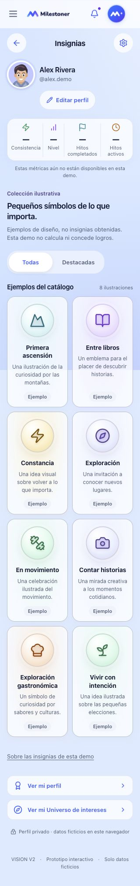
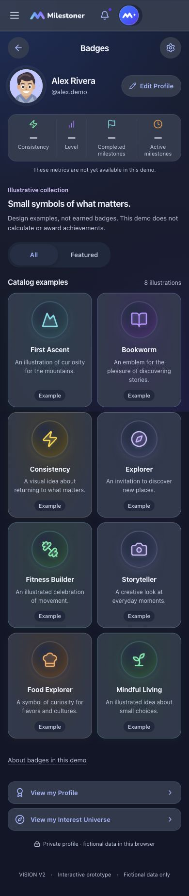
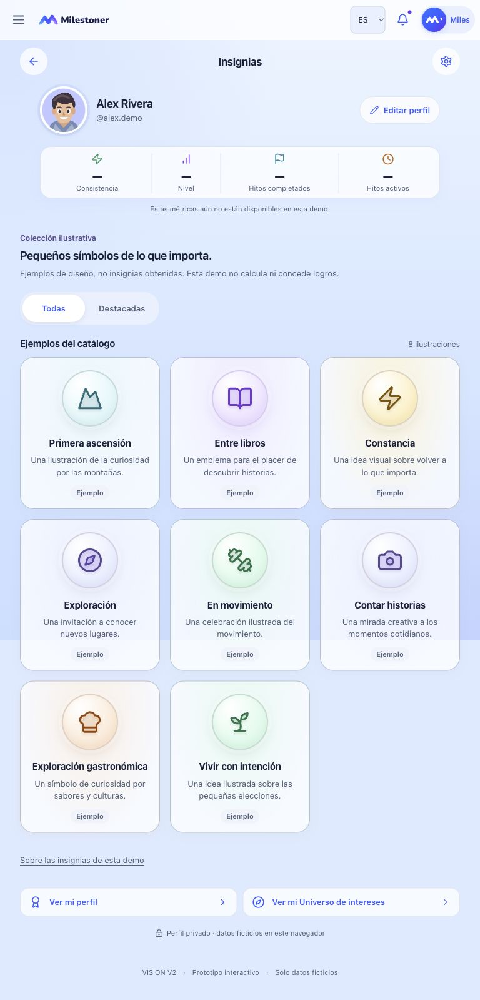
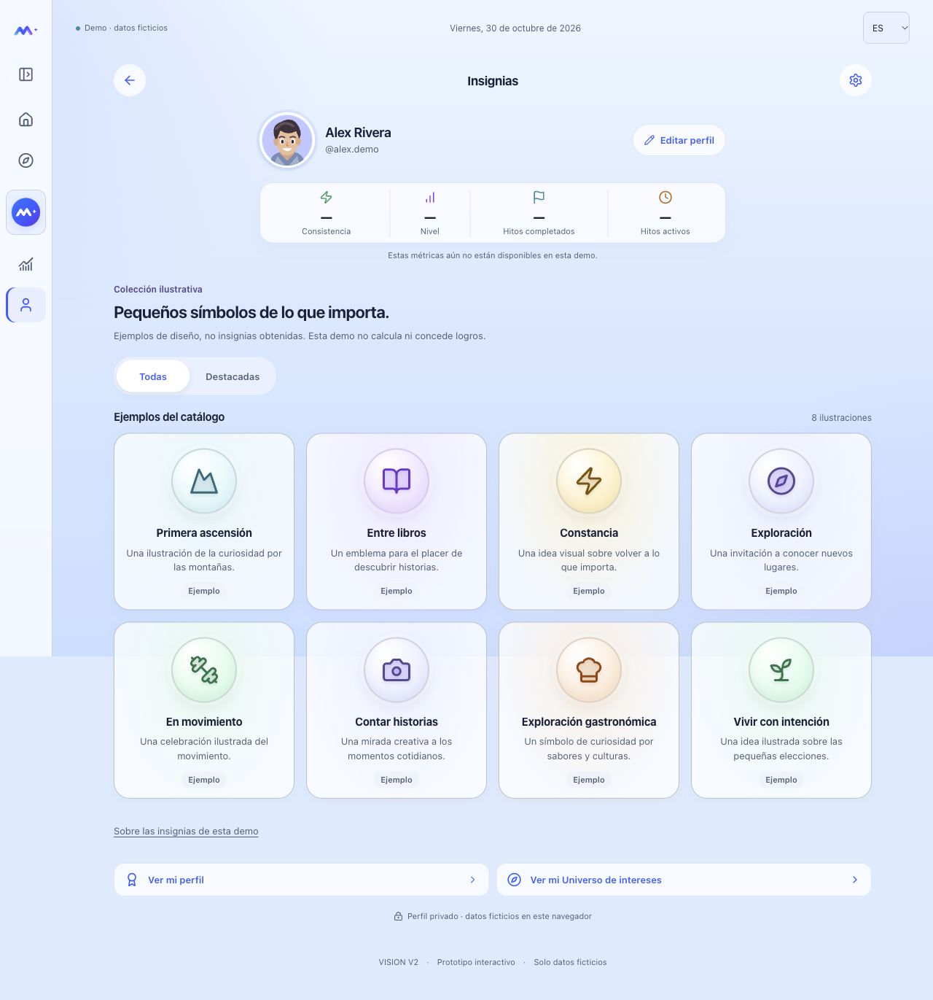
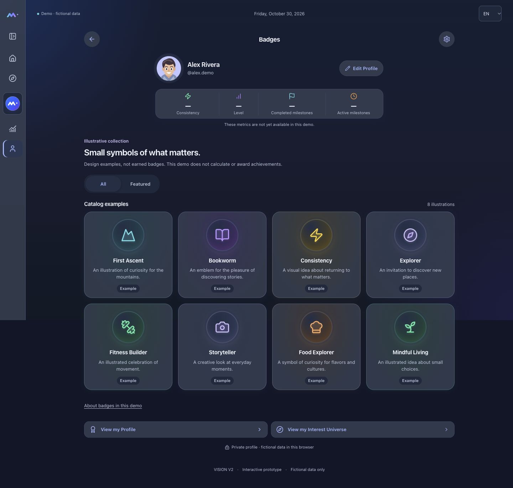
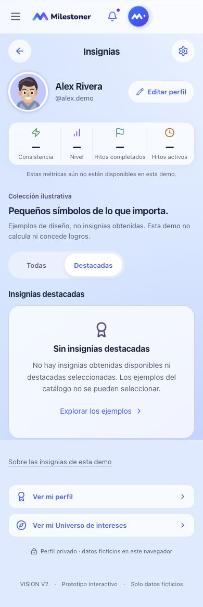

PENDING OWNER VISUAL AND FUNCTIONAL REVIEW. Candidata Web publicada para evaluación. Datos ficticios; publicar no equivale a aceptar la UX. El mockup original permanece privado.
Ocho ejemplos ilustrativos, avatar e identidad compartidos, estadísticas no disponibles. Ninguna insignia obtenida o destacada; sin reglas de obtención, fechas, XP ni niveles. No hay selección ni gestión. El filtro Hitos requiere definir su clasificación; no se simula una regla.
La composición sigue la referencia privada con medallones vectoriales adaptados al sistema de iconos Web. Dos columnas móviles, tres en tablet y cuatro en escritorio. La referencia original no forma parte de estas capturas.





